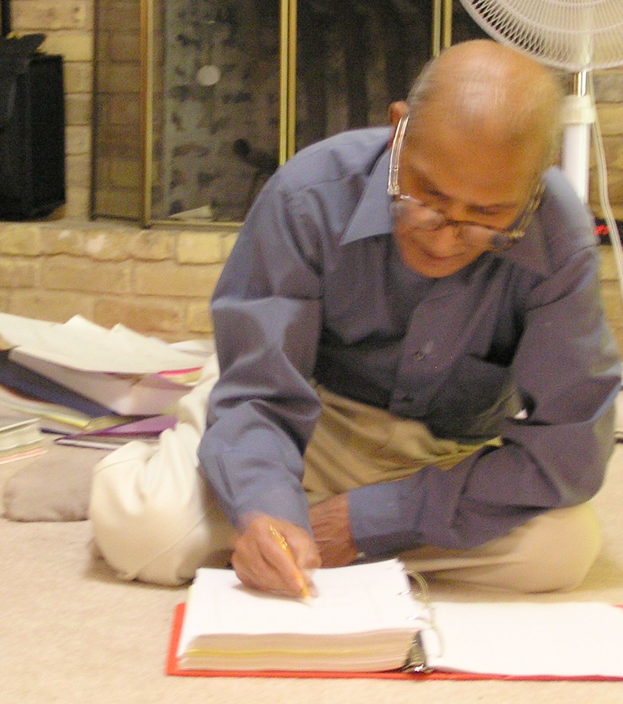
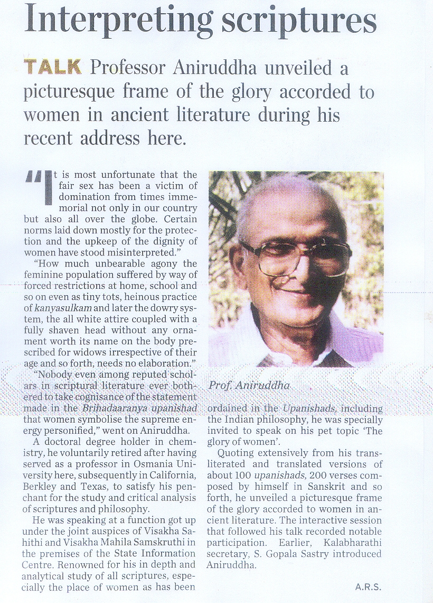
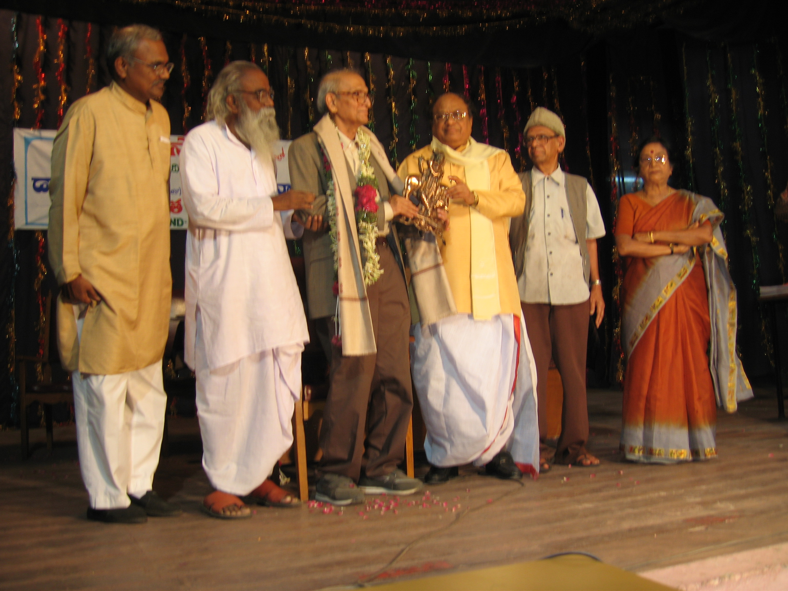
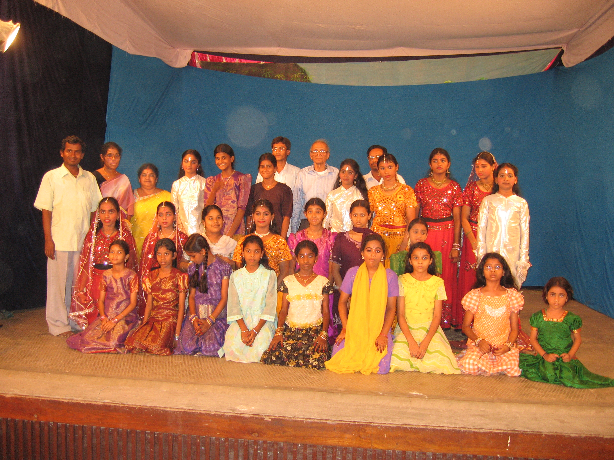
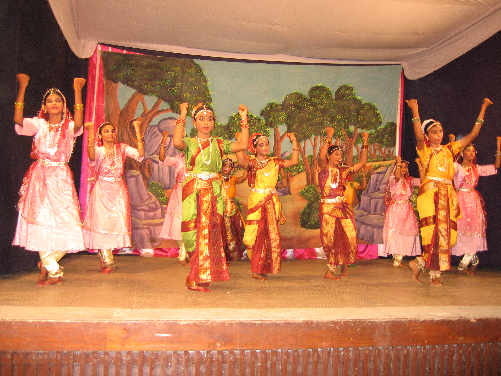

ARCHIVAL COLLECTION
Archival photographs, publications, public programs, scholarly work, manuscripts, and cultural activities related to the life and work of Dr. G. R. Somayajulu (“Aniruddha”).



Archival video related to public recognition, literary contributions, cultural activities, and philosophical work associated with Dr. G. R. Somayajulu (“Aniruddha”).
Selected archival recordings of Sanskrit Geetas and musical compositions written by Dr. G. R. Somayajulu (“Aniruddha”).
Sri Krishna Birthday Song • Sanskrit Musical Composition
Archival musical rendering of a Sanskrit composition celebrating the birth and philosophical symbolism of Sri Krishna.
Dr. G. R. Somayajulu also wrote several Sanskrit and philosophical dance ballets performed by youth cultural groups in Andhra Pradesh. These works combined literature, music, philosophical themes, and choreographed performance traditions.

